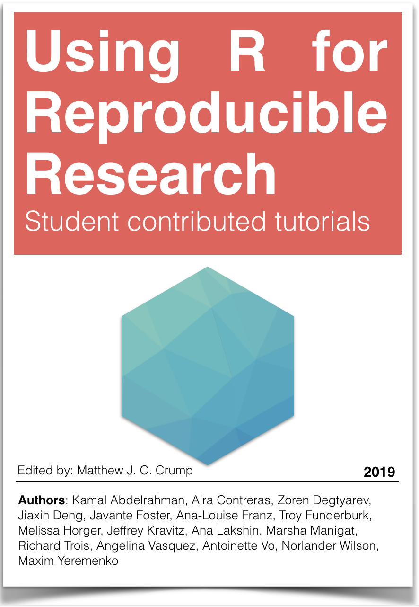

PSYC 7709: Using R for Reproducible Research
2018: Last compiled 2019-05-25
Preface

These chapters were written by students in PSYC 7709: Using R for Reproducible research in Spring 2019. Each chapter is part of a final project involving writing a tutorial about an R package.
License CC BY-SA 4.0 license
The book is released under a creative commons CC BY-SA 4.0 license. This means that this book can be reused, remixed, retained, revised and redistributed (including commercially) as long as appropriate credit is given to the authors. If you remix, or modify the original version of this open textbook, you must redistribute all versions of this open textbook under the same license - CC BY-SA 4.0.